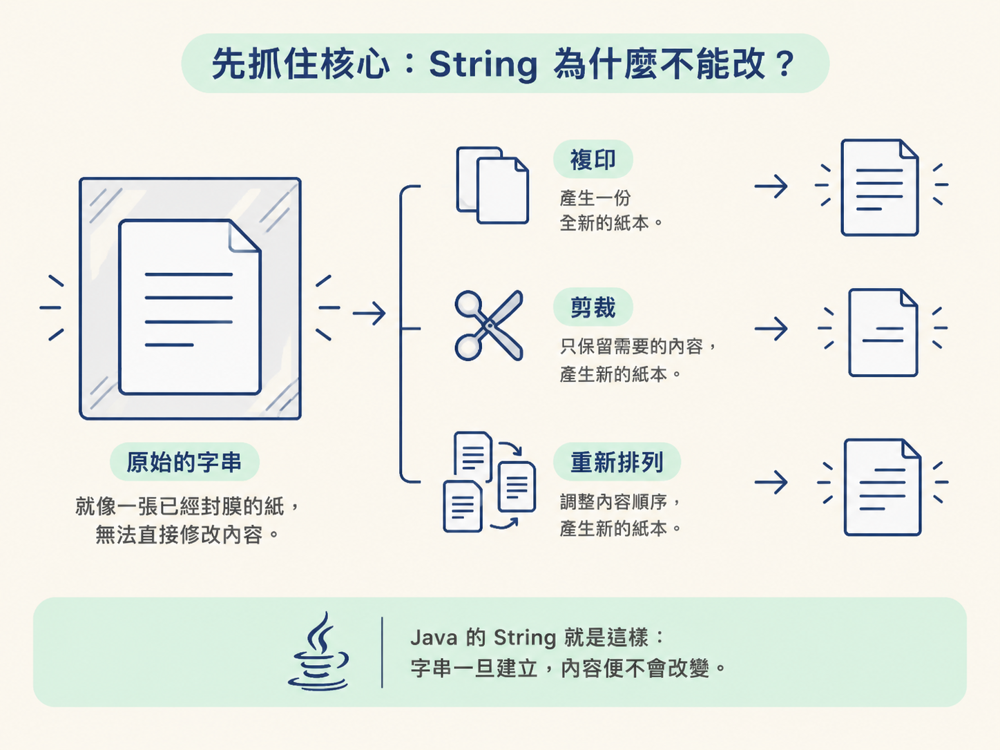
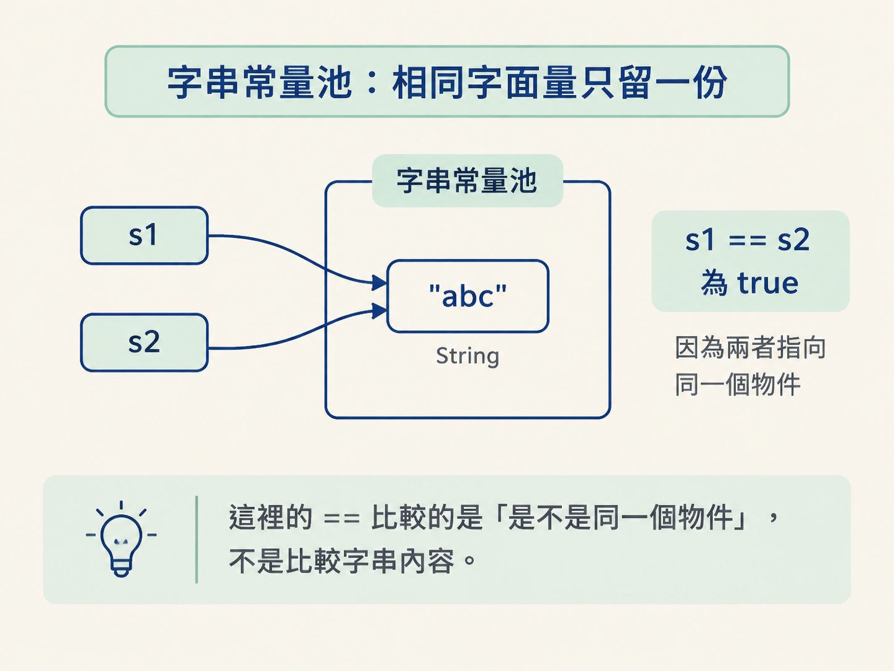
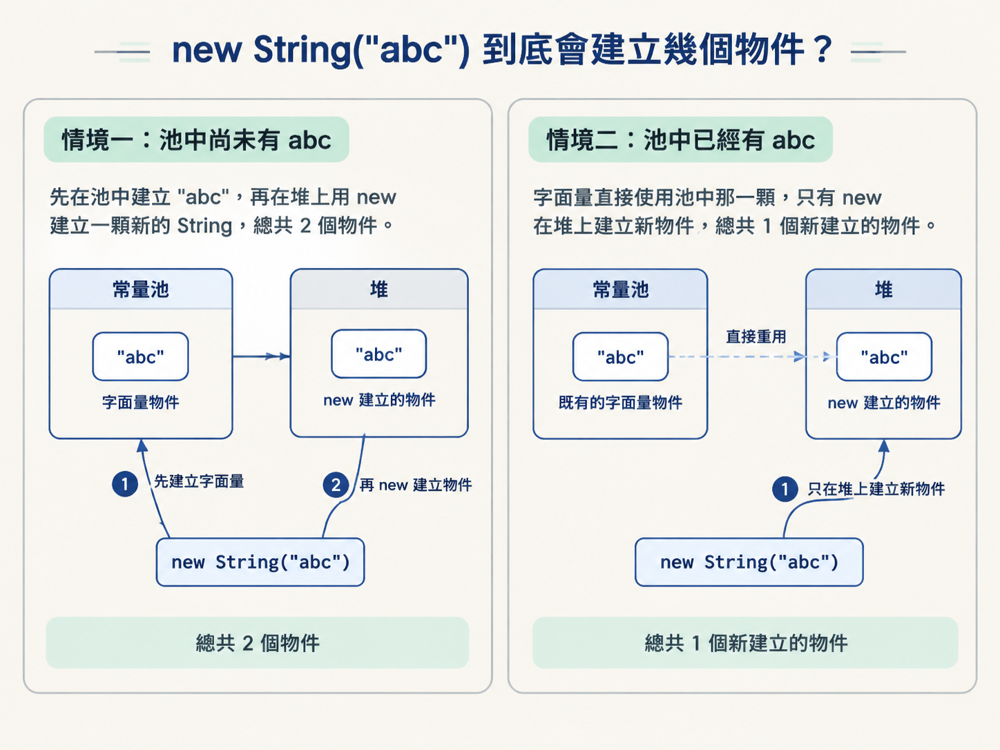

有些問題平常很難察覺，直到服務開始匯出大量資料，CPU 和 GC 同時飆高，log 裡也塞滿垃圾回收訊息，才發現效能瓶頸竟然來自一個看似無害的 +。
例如下面這種寫法：
String s = "abc";
s = s + "def"; // 不是改 s 原本的內容，而是新建一個 "abcdef"，再讓 s 指過去直覺上，這像是在原本的字串尾端接上 "def"。但 String 是不可變的，所以實際上是建立一個全新的字串，把舊內容和新內容合在一起，再讓 s 改指向新物件。
如果這件事在迴圈裡執行一萬次，就可能產生一萬個短命物件。這些物件最後都要交給垃圾回收處理，服務自然容易出現 CPU 飆高、GC 頻繁的情況。

要看懂這個問題，可以把它想成「位址和內容的遊戲」：變數裡放的是參考，物件住在堆裡；String 的不可變性、字串常量池、new String 會建立幾個物件，以及 intern 在不同 JDK 版本的差異，都是這場遊戲的不同規則。
String 內部會保存字串內容。早期主要使用字元陣列，Java 9 之後則改用 byte 陣列，以便更有效率地儲存不同文字內容。這個內容欄位使用 final，而且 String 沒有提供讓外部直接修改陣列內容的方法。
因此，String 建立完成後，內容就不能被改動。你看到的「修改字串」，其實都是建立另一個 String 物件。
這個限制看似不方便，卻換來幾個重要好處：
hashCode 就能安全地保留。假設程式裡到處都寫著 "abc"。如果每次遇到它，JVM 都建立一個新的 String 物件，記憶體很快就會被大量重複內容占滿。
所以 JVM 提供了字串常量池。當程式遇到字串字面量時，JVM 會先檢查池裡是否已經有相同內容。若有，就直接使用那一份；若沒有，才建立物件並登記到池裡。
因此，直接寫出的兩個相同字面量，通常會指向同一個物件：
String a = "abc";
String b = "abc";
System.out.println(a == b); // true，兩者都指向常量池裡同一個物件這裡要分清楚兩個概念：
== 比較的是兩個參考是否指向同一個物件。equals 比較的是兩個字串的內容是否相同。new String("abc") 會建立幾個物件？標準答案是一個或兩個，要看執行這行程式之前，常量池裡是否已經有 "abc"。
情況一：常量池裡原本沒有 "abc"。
JVM 先處理字面量 "abc"。由於池裡沒有相同內容，它會建立一個代表 "abc" 的 String 物件，並讓常量池保存這份參考。接著執行 new String(...)，new 會在堆裡另外建立一個新的 String 物件，內容從前面的字串取得。
這時會有兩個物件：一個是常量池使用的物件，另一個是 new 建立的物件。
情況二：常量池裡已經有 "abc"。
字面量會直接重複使用池裡已有的參考，不必再建立物件。這次只有 new 那一步會在堆裡建立新的 String，所以只會新增一個物件。
不論是哪一種情況，new 出來的物件都和常量池中的那份不是同一個物件：
String s1 = "abc";
String s2 = new String("abc");
System.out.println(s1 == s2); // false，一個在池、一個在堆
System.out.println(s1.equals(s2)); // true，內容相同這題真正要考的，不是死背「一個或兩個」，而是掌握判斷順序：new 一定會另外建立物件；字串字面量則會先查常量池。只要這個規則沒有混淆，物件數量就能自己推導出來。

intern：手動尋找或加入常量池String.intern() 是一個 native 方法。它會拿目前的字串去常量池查找：
它的核心想法是去重。假設程式中有大量內容相同的字串，透過 intern，就能讓它們共用同一份內容，降低記憶體使用量。
不過，intern 在不同 JDK 版本的行為有差異，面試常用「深拷貝與淺拷貝」來考這件事：
| 版本 | 常量池位置 | 入池策略 | 結果 |
|---|---|---|---|
| JDK 1.6 | 永久代（PermGen） | 把堆裡的物件完整複製一份進池 | 池物件與堆物件是兩個不同物件，位址不同 |
| JDK 1.7 起 | Java 堆 | 不再複製物件，只在池裡存一個指向堆物件的參考 | 池中的參考與原物件指向同一個東西，位址相同 |
| JDK 1.8 | Java 堆 | 邏輯同 1.7（只是永久代換成了元空間，常量池仍留在堆） | 與 1.7 一致 |
JDK 1.6 的常量池位於永久代。永久代空間較小，而且大小相對固定；如果大量呼叫 intern，就可能因為永久代不足而出現 OutOfMemoryError: PermGen space。
JDK 1.7 之後，常量池移到 Java 堆，並改成盡量保存指向原本堆物件的參考，而不是再複製一份物件。這樣可以減少重複物件，也降低因永久代空間不足造成的記憶體風險。
String 適合拿來表示不會改變的內容。StringBuilder 和 StringBuffer 則提供可變的內容容器，適合需要反覆追加字串的情境。
這三者的差異，可以先抓住一個核心問題：你是在「讀取固定內容」，還是在「反覆修改同一段內容」？
append 會直接在同一個物件上追加內容；容量不足時才會擴容。它沒有加鎖，單執行緒下通常最快。synchronized，可以提供執行緒安全，但每次加鎖與解鎖都有額外成本，因此單執行緒下通常比 StringBuilder 慢。在頻繁拼接字串的場景中，效能大致可以理解成：
StringBuilder > StringBuffer >>> String
原因很直觀：String 每次都像拿一張新的紙，把舊內容全部抄過去再加新內容；StringBuilder 則像使用同一本可擴充的筆記本，直接接著寫。

選型口訣：常量或少量資料用 String；單執行緒拼接（絕大多數業務場景）用 StringBuilder；只有真的有多個執行緒同時改同一個字串這種極端場景，才用 StringBuffer。
大多數業務程式碼不需要手動呼叫 intern。直接使用字串字面量時，JVM 本來就會處理常量池的重複利用。
真正需要留意的是兩種情況。
第一，在迴圈或高頻路徑上，不要習慣性地用 + 反覆拼接字串。String 的不可變性會讓每次拼接都可能產生新物件，最後把壓力轉移到垃圾回收。這種場合通常應改用 StringBuilder。
第二，不要因為面試題常出現 intern，就到處手動呼叫它。它確實可能減少重複字串占用的記憶體，但也會增加常量池查找與管理的成本。用錯地方時，原本想省記憶體，反而可能讓程式變慢。